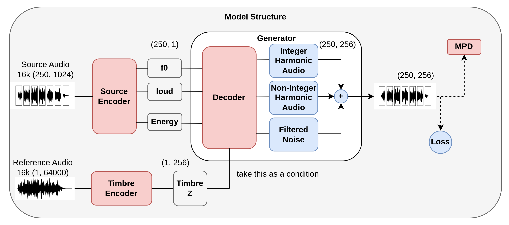

GAN-based Instrument Timbre Transfer | GitHub Repo
The model takes a source instrument audio and a reference audio of a different instrument, then synthesizes the source's melody with the reference's timbre.
The model reconstructs the original audio from extracted features (F0, loudness, timbre embedding). Compare the original and reconstructed audio below.
Resynthesis quality comparison on NSynth test set. Lower is better for both metrics.
| Model | Loudness L1 ↓ | F0 L1 ↓ | Params | Timbre Transfer |
|---|---|---|---|---|
| WaveRNN | 0.10 | 1.00 | 23M | ✗ |
| DDSP | 0.07 | 0.02 | 7M | ✗ |
| Ours | 0.08 | 0.02 | 7.5M | ✓ |
